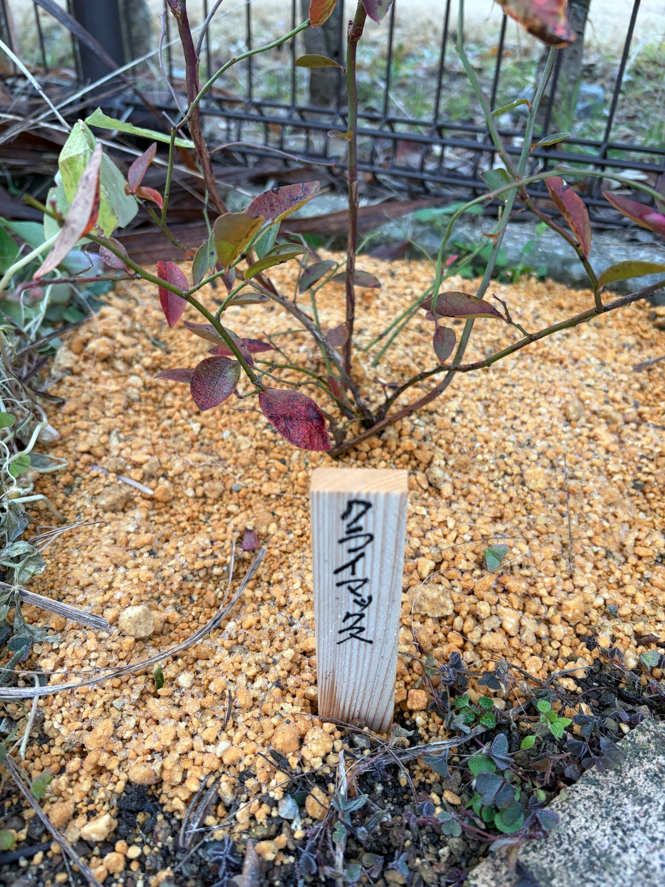

2025/12/16 クライマックスを地植えしました。庭での生育が始まります
12月13日に購入してきたラビットアイ系ブルーベリーの3品種を、今日、12月16日に植え付けました。
クライマックスとプレミアは地植えにし、メンデイトだけはポット植えにしました。同じ日に購入した3品種が、それぞれの場所で育ち始めます。
今回の写真は、地植えしたクライマックスの姿です。購入時の黒い育苗ポットから庭へ移り、株元の前には「クライマックス」と書いた木製の名札を立てました。庭の一角に植わった姿を見ると、これからここで育てていくのだという実感が湧いてきます。
植え付けた当日なので、まだ生長の変化を見る段階ではありません。まずは今の葉の色や枝の形を残しておき、この姿を出発点に、季節ごとの変化を見守っていきたいと思います。
クライマックス・プレミア・メンデイトを同じ日に植え付けました
今回植え付けたのは、クライマックス・プレミア・メンデイトの3品種です。
クライマックスだけを単独で育てるのではなく、同じラビットアイ系の異なる品種をそろえ、受粉のことも考えて育て始めました。購入時には、まだ3品種とも植え付け前でしたが、今日、それぞれの植え付けを終えました。
クライマックスとプレミアは庭に直接植え、メンデイトはポットで育てていきます。同じ日に植え付けても、品種や植え方が違うため、これからの変化がすべて同じように進むとは限りません。
芽が動き始める時期や葉の広がり方、花が咲く時期など、それぞれの姿を記録していきたいと思います。違いが出てきたときも、品種によるものなのか、植え方や場所が関係しているのかをすぐに決めつけず、一株ずつ見ていければと思います。
育苗ポットから、庭の地面へ
13日の写真では、クライマックスは黒い育苗ポットに入っていました。今日はそのポットから出し、庭に地植えしました。
鉢に入っていたときは、苗と鉢を一つのまとまりとして眺めていました。地植えにした今は、周囲の地面やほかの植物とつながり、庭の風景の一部になったように感じます。
株元の周囲には黄土色の粒が広がり、その中央から複数の枝が立ち上がっています。手前に立てた木製の名札が目印になり、これから葉が少なくなる時期にも、どの株なのか分かるようになりました。
これから育てていく場所に植え付けたことで、果実への期待だけでなく、この場所で枝葉がどのように広がるのかにも関心が向きます。今は枝の間から向こう側がよく見えますが、葉が茂る季節には、この一角の印象も変わっていきそうです。
赤く色づいた葉と、緑の葉が残っています
地植えしたクライマックスには、赤色や赤紫色に色づいた葉が残っています。褐色を帯びた葉もあり、その間には緑色を残す葉も見られます。
株全体が一色にそろっているわけではなく、枝ごと、葉ごとに色が違います。手前では赤みの強い葉が目立ち、左側や枝の奥には緑色や黄緑色を残した葉があります。一枚の葉の中にも色の違いがあり、冬の苗にもさまざまな表情があります。
13日の購入時にも、赤く色づいた葉と緑の葉が混在していました。今回もその姿が見られますが、撮影した角度や範囲が違うため、この3日間で葉が何枚減ったのか、色づきがどのくらい進んだのかまでは分かりません。
まずは、植え付けた日にこうした葉が残っていたことを記録しておきます。この先、葉が落ちて枝が目立つ姿になるのか、しばらく葉を残したままなのかも見ていきたいと思います。
葉の表面にも、一枚ずつ違いがあります
近くで見ると、赤く色づいた葉の中には、黒っぽい斑点や色むらが見えるものがあります。葉先や縁が褐色になった葉、少し反ったり垂れたりしている葉もあります。
遠くから眺めると赤い葉が印象に残りますが、一枚ずつ見ると、その状態はそろっていません。緑が残る葉もあれば、赤紫色が濃く出ている葉もあり、同じ株の中にさまざまな葉が残っています。
こうした見た目だけで、原因や株全体の状態を決めつけることはできません。また、今日植え付けたばかりなので、今見えている葉の色や傷みを、地植えによって生じた変化として捉えることもできません。
今の葉の姿を最初の状態として覚えておき、その後の変化を見ていきたいと思います。葉だけでなく、枝先や株全体にも目を向けながら、少しずつ様子を追っていければと思います。
株元から伸びる枝の形がよく分かります
株元付近からは複数の枝が伸びています。中央には上へ向かう枝があり、その周囲には左右へ広がる枝も見えます。
枝の色には、茶色や赤紫色を帯びた部分と、緑色の部分があります。比較的太い枝と細い枝が重なり、葉が少ないところでは、枝のつながりや分かれ方をたどることができます。
今は葉が密に茂っていないため、枝がどちらへ伸びているのかが見やすい状態です。上へ伸びる枝と横へ広がる枝が組み合わさり、これからの株の形につながる骨組みが見えるようです。
この枝ぶりは、地植えした時点ですでにある姿です。今後、新しい枝や葉が出てきたときに、どこが変わったのかを比べられるよう、植え付け当日の状態として残しておきたいと思います。

今は、植え付け当日の姿を残しておきます
庭に植え付けると、その後の変化を早く見たくなります。けれど、今日は植え付けを終えたばかりです。
枝や葉の様子は見えますが、地面の下で根がどのような状態になっているかは分かりません。葉が残っていることだけで、庭の土に根付いたと判断することもできません。
まずは、この場所に植えた日の姿を残しておくことに意味があると思います。これから葉が落ちたり、芽が動いたりしたときに、最初はどのような姿だったのかを振り返れるようにしておきたいです。
大きくなったかどうかだけでなく、どの枝に葉が残っていたのか、どんな色をしていたのか、株元から枝がどの方向へ伸びていたのか。今見える小さな特徴も、その後の変化を知る手がかりになりそうです。
プレミアとともに、これからの開花を楽しみに
クライマックスとプレミアは、今日、どちらも地植えにしました。
購入時から、異なる品種を育てることで受粉につながることを期待しています。これから春を迎えたときに、それぞれがいつ咲き始め、どのくらい花の時期が重なるのかを見ていきたいと思います。
メンデイトも同じ日にポットへ植え付けました。3品種を育てることで、一株だけを眺めていたら気づかなかった違いにも出会えるかもしれません。
今はまだ、花や果実を楽しむ前の段階です。まずは植え付けた株のその後を見守り、芽吹きや開花へとつながる変化を、一つずつ記録していきたいです。
庭に植わったクライマックスの、これからを見守ります
13日に購入したときの育苗ポットの姿から、16日に庭へ植え付けた姿へ。クライマックスの記録が、一歩先へ進みました。
赤く色づいた葉と緑の葉を残し、枝を上や横へ伸ばしている今の姿には、冬の苗らしい控えめな印象があります。それでも、名札を立てて眺めると、庭に新しい楽しみが加わったことを感じます。
この場所で新しい葉を広げ、枝を伸ばし、いつか花や実を見せてくれるのか。収穫を楽しみにしながらも、その前にある季節ごとの姿を大切に見ていきたいと思います。
2025年12月16日。クライマックスを地植えした今日の姿を、これからの生育を比べるための出発点として残します。